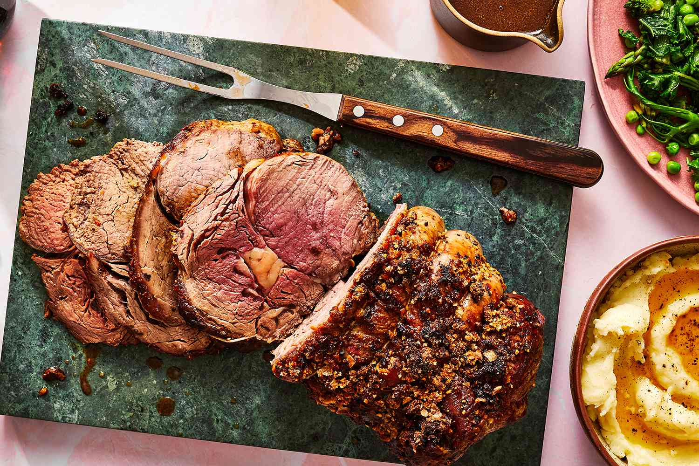

Home
Rib Eye Roast

You'll love this Rib Eye Roast—succulent, buttery beef with a rich, caramelized crust. Slow-roasted to juicy perfection,
it's an impressive yet simple centerpiece for any feast.
Ingredients
- 1 cup softened butter
- 6 cloves garlic, minced
- 1 (4 pound) bone-in rib-eye roast
- sea salt and cracked black pepper to taste
Steps
- Gather all ingredients and preheat the oven to 500 degrees F (260 degrees C).
- Beat butter and garlic together in a bowl.
- Poke several holes in rib eye with a sharp knife. Rub butter mixture all over meat and season with salt and pepper. Place rib eye fat-side up in a roasting pan.
- Roast in the preheated oven for 20 minutes.
- Reduce heat to 325 degrees F (165 degrees C) and continue cooking until rib eye is reddish-pink and juicy in the center,
1 1/2 to 2 hours. An instant-read thermometer inserted into the center will read 145 degrees F (63 degrees C) for medium.
- Serve and enjoy!